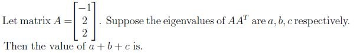
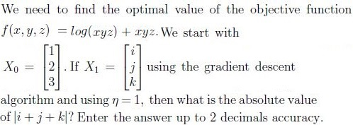
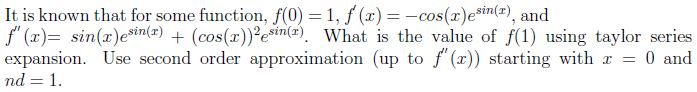

A diagonal matrix with positive entries is positive definite.
A symmetric with positive determinant is not necessarily positive definite.
If matrix S is positive definite then S−1 may also be positive definite.
Q8SA4 marks

Q9SA4 marks

Q10SA4 marks

Q11SA4 marks
We need to find the cheapest cylindrical container to hold 1000m3 of water. The cost of top and bottom circular base is twice that of material used for side of cylinder. Suppose if 1m2 area of side cost 1000 rupees. Top and bottom base costs 2000 rupees each, then what is the value of radius of cylinder such that we get minimum cost?
Comprehension passage - the questions below it refer to this